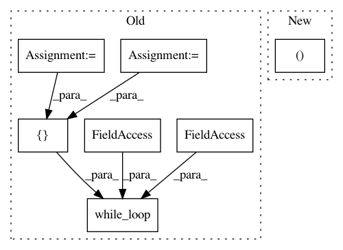

a4c4a4f2d33081806397784f96b113d5b3b32c9a,tensorforce/core/memories/prioritized_replay.py,PrioritizedReplay,tf_retrieve_timesteps,#PrioritizedReplay#Any#,149
Before Change
def tf_retrieve_timesteps(self, n):
num_timesteps = (self.memory_index - self.episode_indices[0] - 2) % self.capacity + 1
n = tf.minimum(x=n, y=num_timesteps)
indices = tf.zeros(shape=(n,), dtype=tf.int32)
// Only compute once outside loop.
sum_priorities = tf.reduce_sum(input_tensor=self.priorities, axis=0)
loop_index = tf.get_variable(
name="loop-index",
dtype=tf.int32,
initializer=0,
trainable=False
)
def cond(sum_priorities, priorities, indices, loop_index, n):
return tf.less(loop_index, n)
def sampling_fn(sum_priorities, priorities, indices, loop_index, n):
// 3 cases:
// 1. not_sampled_index < len(self.observations):
// 2. sum_priorities / self.capacity < util.epsilon:
// 3. all other cases
def true_fn():
// tf cond on
// 1. not_sampled_index < len(self.observations):
// -> fetch not sampled index
// 2. sum_priorities / self.capacity < util.epsilon:
// -> randomly sample
pass
def false_fn():
// Priority sampling loop.
pass
index = tf.cond(
pred=tf.logical_or(x=(self.no_priority_index < n), y=(sum_priorities / self.capacity < util.epsilon)),
true_fn=true_fn,
false_fn=false_fn
)
tf.while_loop(
cond=cond,
body=sampling_fn,
loop_vars=[sum_priorities, self.priorities, indices, loop_index, num_timesteps]
)
// Save batch indices.
assignment = tf.assign(ref=self.batch_indices, value=indices)
After Change
// Vectorized sampling.
sum_priorities = tf.reduce_sum(input_tensor=self.priorities, axis=0)
sample = tf.random_uniform(shape=(num_priority_elements,),dtype=tf.float32)
indices = tf.constant(value=0, shape=(num_priority_elements,))
def cond(loop_index, sample, priorities):
return tf.reduce_all(input_tensor=(sample <= 0))
In pattern: SUPERPATTERN
Frequency: 3
Non-data size: 7
Instances
Project Name: reinforceio/tensorforce
Commit Name: a4c4a4f2d33081806397784f96b113d5b3b32c9a
Time: 2018-02-08
Author: mi.schaarschmidt@gmail.com
File Name: tensorforce/core/memories/prioritized_replay.py
Class Name: PrioritizedReplay
Method Name: tf_retrieve_timesteps
Project Name: RasaHQ/rasa
Commit Name: 89326c618dcf420a79139034b02250a09335ba01
Time: 2021-01-26
Author: mr.voov@gmail.com
File Name: rasa/utils/tensorflow/layers.py
Class Name: DotProductLoss
Method Name: _random_indices
Project Name: fgnt/nara_wpe
Commit Name: 4580d28f9cc8f846ee6fb42dda6909a98797fcd9
Time: 2018-05-16
Author: heymann@nt.upb.de
File Name: nara_wpe/tf_wpe.py
Class Name:
Method Name: wpe